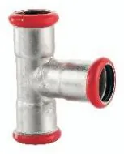
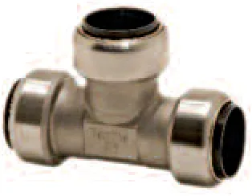
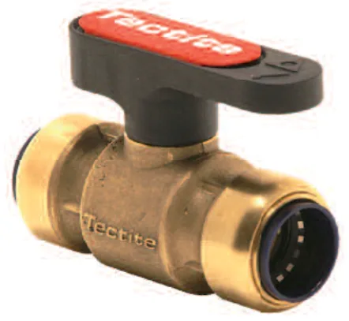
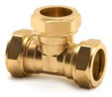
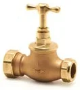
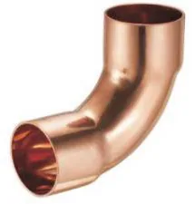

Besco · Pegler Yorkshire · 30 lat na rynku
Cztery metody łączenia. Jeden dystrybutor.
Złączki i armatura Besco oraz Pegler Yorkshire dla hurtowni: press, na wcisk, skręcane i lutowane. Indywidualne warunki dla każdej hurtowni, dostawa następnego dnia.
Oferta dla hurtowni
Cztery systemy łączenia od jednego dystrybutora
Dystrybuujemy złączki i armaturę Besco oraz Pegler Yorkshire na terenie całej Polski. U nas zatowarujesz pełny program: zaciskany, na wcisk, skręcany i lutowany.
- Indeksów w ofercie
- ok. 2 900
- Besco
- 1 936
- Pegler Yorkshire
- ok. 1 000
- Średnice
- 6–108 mm



01 · Besco
Złączki i zawory zaciskane
Miedziane systemy press w profilach V i M, serie do gazu, press ze stali węglowej oraz zawory kulowe. Miedź według EN 1254-7.
- Kto kupuje w Twojej hurtowni
- Firmy instalacyjne z zaciskarkami: kotłownie, piony i przyłącza w budownictwie wielorodzinnym i obiektach, instalacje gazowe.
- Argument sprzedażowy
- Profil M można zaciskać szczęką V w zakresie DN12–28, więc jeden stan magazynowy obsłuży klientów z oboma typami szczęk.
| Linia | Średnice | Zastosowanie | Parametry | Indeksy |
|---|---|---|---|---|
| Miedź press, profil VBesco | 12–54 mm | woda pitna, CO, przemysł | 16 bar · DVGW, KIWA, WRAS, RISE | 257 |
| Miedź press, profil MBesco | 12–108 mm | woda pitna, CO, przemysł | 16 bar · DVGW, WRAS, RISE | 294 |
| Miedź press do gazu, V i MBesco | 15–35 mm | gaz ziemny, LPG | 5 bar · DVGW, INiG | 211 |
| Stal węglowa press, profil MBesco | 12–108 mm | CO w obiegu zamkniętym, sprężone powietrze | 16 bar | 256 |
| Zawory kulowe press, kontur V i MBesco | 15–54 mm | woda, CO | 16 bar · DVGW, WRAS | 25 |



02 · Pegler Yorkshire
Złączki i zawory na wcisk Tectite
System push-fit montowany bez narzędzi, prądu i otwartego ognia. Łączy rury miedziane, PEX, PB, ze stali nierdzewnej i węglowej, zależnie od linii.
- Kto kupuje w Twojej hurtowni
- Serwisanci, instalatorzy bez zaciskarki i klienci remontowi. Montaż bez narzędzi sprawia, że towar schodzi również przy ladzie.
- Argument sprzedażowy
- Producent daje 25 lat gwarancji na Tectite Sprint, Classic, Pro i 316, a 30 lat przy rurach Yorkshire.
| Linia | Średnice | Zastosowanie | Parametry | Indeksy |
|---|---|---|---|---|
| Tectite ClassicPegler Yorkshire | 10–28 mm | woda, CO · miedź, PEX, PB | 16 bar z miedzią · WRAS, PZH | 251 |
| Tectite Pro i CarbonPegler Yorkshire | 15–54 mm | woda, CO, chłodzenie · także stal węglowa | demontowalne | 115 |
| Tectite 316Pegler Yorkshire | 15–54 mm | rury ze stali nierdzewnej | kwasoodporne | 114 |
| Zawory i filtry na wciskPegler Yorkshire | 15–54 mm | PT550, PT913, TX300, TX405, TX480 | kulowe, odcinające, mieszające | 19 |
| Akcesoria i narzędzia Tec-ToolsPegler Yorkshire | 10–54 mm | tulejki, gratowniki, mierniki | do montażu systemu | ok. 30 |



03 · Pegler Yorkshire
Złączki skręcane Kuterlite
Mosiężne złączki zaciskowe z pierścieniem do rur miedzianych i PE. Montaż kluczem, bez lutowania i zaciskarki.
- Kto kupuje w Twojej hurtowni
- Serwis i podłączenia urządzeń: kotłów, podgrzewaczy i armatury. Klasyczny towar ladowy z rotacją przez cały rok.
- Argument sprzedażowy
- Jedna marka na miedź 6–54 mm i rury PE 20–63 mm, razem z zaworami w tym samym systemie.
| Linia | Średnice | Zastosowanie | Parametry | Indeksy |
|---|---|---|---|---|
| Kuterlite K600Pegler Yorkshire | 6–28 mm | rury miedziane | seria podstawowa | ok. 150 |
| Kuterlite K900 Pro (KN 900)Pegler Yorkshire | 8–54 mm | rury miedziane | złączki, kolana, przejścia GW/GZ | ok. 185 |
| Kuterlite K700Pegler Yorkshire | 20–63 mm | rury PE | złączki PE × PE i PE × miedź | ok. 65 |
| Zawory z końcówkami zaciskowymiPegler Yorkshire | 15–28 mm | woda, podłączenia urządzeń | kurki, zawory odcinające | ok. 30 |


04 · Besco
Złączki lutowane
Miedziane kształtki kapilarne do lutu miękkiego i twardego: metryczne serie 4000 i 5000 według EN 1254, calowe ANSI B16.22 oraz G-size do wysokich ciśnień.
- Kto kupuje w Twojej hurtowni
- Instalatorzy pracujący w klasycznej technologii, chłodnictwo i klimatyzacja oraz utrzymanie ruchu w przemyśle.
- Argument sprzedażowy
- Jeden dostawca na kształtki metryczne, calowe i G-size do 80 bar, bez dokładania kolejnej marki.
| Linia | Średnice | Zastosowanie | Parametry | Indeksy |
|---|---|---|---|---|
| Seria 4000 i 5000, EN 1254Besco | 6–108 mm | woda, CO, gaz, przemysł | 25 bar · DVGW, KIWA, WRAS | 513 |
| Calowe ANSI B16.22, seria KBesco | 1/4″–4 1/8″ | chłodnictwo, HVAC, przemysł | 25 bar | 315 |
| G-size do wysokich ciśnieńBesco | 22–76,1 mm | chłodnictwo, przemysł | 20–80 bar · do 150 °C | 65 |
Warunki handlowe
Każda hurtownia dostaje własną ofertę, przygotowaną w jeden dzień roboczy.
- 01Oferta szyta na miaręWarunki dopasowane do asortymentu, który prowadzisz, i do Twoich planów sprzedaży.
- 02Dostawy w całej PolsceObsługujemy hurtownie w każdym województwie.
- 03Zatowarowanie na sezonRezerwacje stanów i wspólne planowanie dostaw.
- 04Dokumenty dla Twoich klientówAtesty, deklaracje i karty katalogowe.
Zaplecze, na którym oprzesz swoje stany
Trzymamy pełne stany najczęściej rotujących pozycji Besco i Pegler Yorkshire, dlatego typowe zamówienie hurtowni kompletujemy tego samego dnia. O brakach rynkowych informujemy z wyprzedzeniem, zanim zabraknie towaru na Twoich półkach.
Jak zacząć współpracę
Wysyłasz listę asortymentu
Formularzem, mailem albo telefonicznie. Wystarczą systemy lub indeksy, które chcesz prowadzić, i szacowane ilości.
Ustalamy warunki
W ciągu jednego dnia roboczego dostajesz ofertę dopasowaną do Twojej hurtowni: ceny, dostępność i terminy dostaw.
Zatowarowujesz hurtownię
Wysyłka z magazynu w 24 godziny od potwierdzenia. Duże zamówienia dowozimy własnym transportem, a kolejne uzupełnienia planujemy razem z Tobą.
Baza dokumentów
Dokumenty, o które pytają Twoi klienci
Do każdej pozycji z oferty prowadzimy komplet dokumentów. Hurtowniom udostępniamy bazę po weryfikacji, żeby handlowcy mogli od ręki odpowiedzieć instalatorom i inwestorom.
- 01Atesty higieniczne PZH
- 02Deklaracje właściwości użytkowych
- 03Karty katalogowe i rysunki techniczne
- 04Certyfikaty i aprobaty techniczne
Dostęp przyznajemy w ciągu jednego dnia roboczego od pozytywnej weryfikacji firmy.

Pracujemy przede wszystkim z hurtowniami
Stały partner do uzupełniania stanów
Ceny progowe dla odbiorców regularnych, rezerwacje stanów pod kontrakty Twoich klientów i wspólne planowanie zatowarowania przed sezonem grzewczym. Cały program Besco i Pegler Yorkshire z jednego źródła, na jednej fakturze.

Kompletacja pod większe inwestycje
Wyceniamy całe specyfikacje z projektu, kompletujemy dostawy etapami i doradzamy zamienniki, kiedy pozycja ma długi termin.

Utrzymanie ruchu bez przestojów
Armatura do mediów technicznych, szybka reakcja na awarie i dokumentacja wymagana przez działy utrzymania ruchu.

Kontakt
Porozmawiajmy o warunkach dla Twojej hurtowni
- Sprzedaż · Piotr Stelmach798 807 106piotr@armatex.pl
- Sprzedaż · Martyna Zielińska515 231 693martyna@armatex.pl
- E-mail ogólnyarmatex1@gmail.com
- Biuro i magazynyul. Składowa 3a, 10-421 Olsztyn